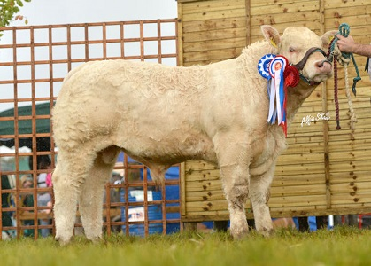

Explore Our Charolais Stock
Charolais was the first Continental breed of cattle to be introduced to Ireland and it revolutionized our beef industry. The initial importation of bulls, which was led by dairy producers seeking a superior sire to improve their calves’ conformation, arrived in the late 1950s. The breed’s main function is within the national suckler beef herd where Charolais remains unrivalled as a terminal sire due to its combined superior growth rate, muscle development, high killing out percentage and meat-eating quality.
Charolais crossbred cattle are favoured by both sectors of the meat trade. Discerning butchers appreciate the Charolais’ intramuscular fat lending to its superior meat-eating quality, while processors supplying multiples prefer Charolais crossbreds with their ability to provide the highest percentage of saleable cuts, in particular from their combination of loin and hind muscling.
